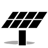

Wind Energy Potential

Wind energy potential class. Higher classes correspond with greater potential.
Wind Power Plants
50+ 10 - 50 Less than 10
Power capacity in MW.
Solar Irradiance

Average daily solar irradiance in kWh/m2/day. Higher values correspond with greater solar potential.
Solar Power Plants
50+ 10 - 50 Less than 10
Power capacity in MW.
Geothermal Potential
Geothermal energy potential class. Lower classes correspond with greater potential.
Geothermal Power Plants
50+ 10 - 50 Less than 10
Power capacity in MW.
Solid Biomass Production

Biomass production by county in thousands of metric tons/year. Only a fraction of biomass produced is used for heat/electricity.
Biomass Power Plants
50+ 10 - 50 Less than 10
Power capacity in MW.